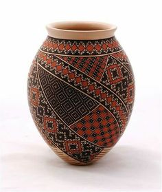
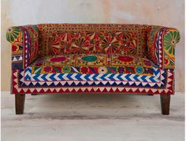

There are alot of cultural experiences in Daman to be explored by tourists. Some of cultural experiences to be adventured are:
Daman was a Portuguese colony from the 16th century to 1961. The Portuguese left behind legacy of architecture, cuisine, and traditions. The town of Nani-Daman, in particular, is known for its Portuguese-style houses, churches, and fortifications. Daman also has a touch of the state as well, it also has a bit of Gujarati touch in itself.
About Daman's Festivitals
Daman celebrates variety of festivals throughout the year, including, Diwali, Holi, Christmas, Good Friday and, Easter.
The most popular festival is the Daman Carnival, which takes place in December and features music, dance, and food.
About Daman's Food
VINDALOO SORPOTEL CAFREAL KHAMAN DHOKLA FAFDA & JALEBI
Daman's cuisine is a fusion of Portuguese, Indian, and African flavours. Popular dishes include vindaloo (a spicy pork curry), sorpotel (a pork and vegetable stew), and cafreal (a spicy chicken dish), khaman (a savory cake made with batter of gram flour), and fafda with jalebi (gram crispy sticks with sweet gram crisps).
It's time for some shopping!
 
Daman is known for its traditional handicrafts, such as bamboo and cane furniture, pottery, and textiles. These items are sold in local markets and shops. These items can also be found all over the state of Gujarat as well.
Religious Sites in Daman
ST. JEROME'S ST.PAULS JAIN TEMPLE
Daman has several religious sites, including the St. Jerome Fort, the St. Paul's Church, and the Jain Temple. These sites are important to the local community and attract visitors from nearby states.
Daman's Environment
Daman is surrounded by lush green forests and is home to several rare and endangered species of flora and fauna. The town is committed to preserving its natural heritage and has several conservation initiatives in place.
There are plenty of activities to do in Daman, such as:
Water Sports

JETSKI SURFING
Boat rides
Heritage walks

Food tours
Shopping